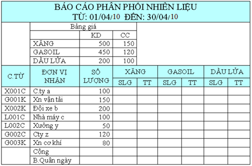

Bài tập Excel 7
Nhập và trình bày bảng tính như sau:

Yêu cầu:
Câu 1: Căn cứ vào ký tự đầu tiên của C.TỪ (chứng từ) để phân bổ số lượng vào các cột SỐ LƯỢNG của XĂNG, GASOIL, và DẦU LỬA
- Nếu ký tự đầu của chứng từ là X thì số lượng được phân bổ vào cột XĂNG.
- Nếu ký tự đầu của chứng từ là G thì số lượng được phân bổ vào cột GASOIL
- Nếu ký tự đầu của chứng từ là L thì số lượng được phân bổ vào cột DẦU LỬA
Câu 2: Tính thành tiền cho mỗi cột = SỐ LƯỢNG * ĐƠN GIÁ, trong đó, ĐƠN GIÁ dựa vào bảng giá. Có 2 loại giá: Giá cung cấp (CC) và Giá kinh doanh (KD). Nếu ký tự cuối cùng bên phải của C.TỪ là C thì lấy giá cung cấp (CC), ngược lại lấy giá kinh doanh (KD)
Câu 3: Tính tổng và bình quân ngày (Tổng cộng/30) cho mỗi cột.